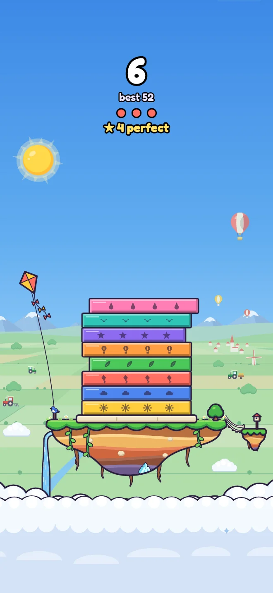
Sky Islands
A storybook floating island with roots and vines dangling beneath it, high over a patchwork countryside.
Song: The theme itself: the waltz every other song is built on.
Build as high as you can before it topples.
The higher it climbs, the more it sways.
No ads. No tracking. No in-app purchases.
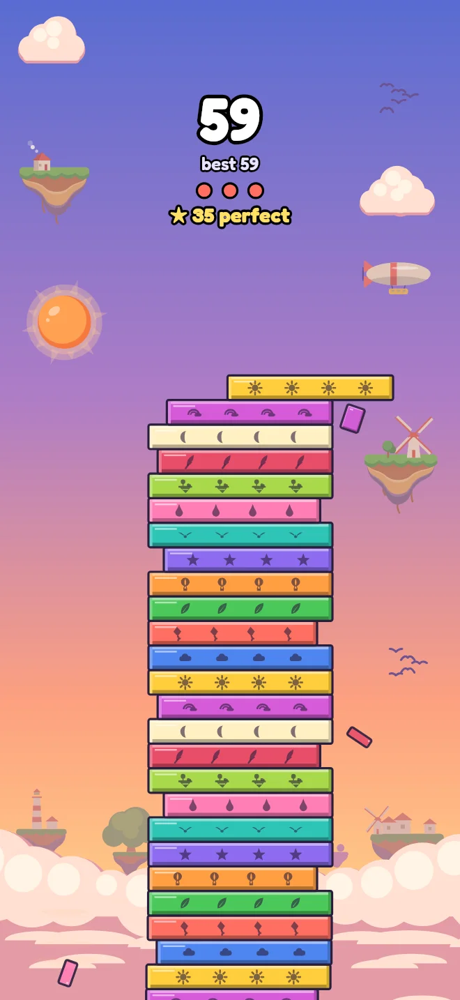
13 worlds, each with its own arrangement of one original melody. The holiday worlds come out in their season, and you can pick any world any time.

A storybook floating island with roots and vines dangling beneath it, high over a patchwork countryside.
Song: The theme itself: the waltz every other song is built on.
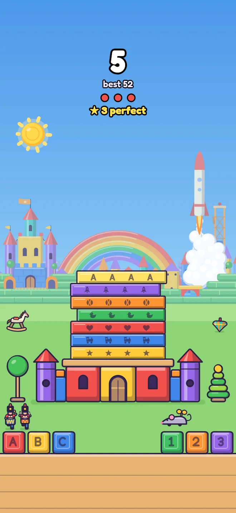
A nursery playset come to life: painted wooden blocks, a rainbow stacker, toy soldiers and a toy rocket.
Song: A toy-box march in the spirit of Victor Herbert's March of the Toys (1903).
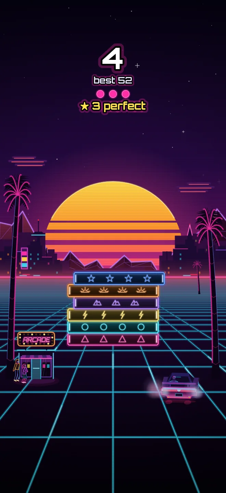
1980s arcade art: a striped sun setting over a neon grid.
Song: French electro in the spirit of Pyramid's The Hall EP.
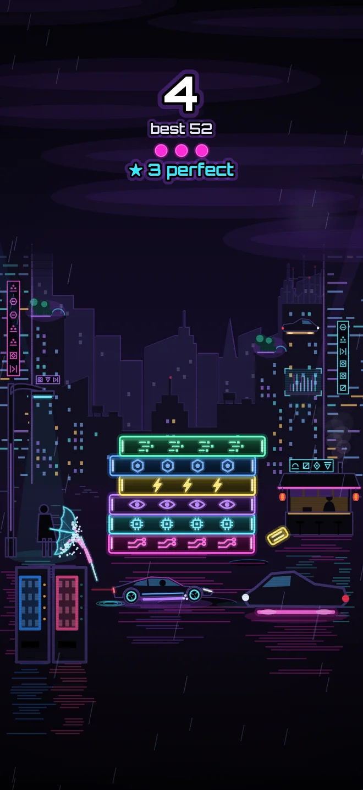
1980s tech-noir films: a rain-soaked neon city at night.
Song: Slow tech-noir after those films' scores, with a tenor sax carrying the theme.
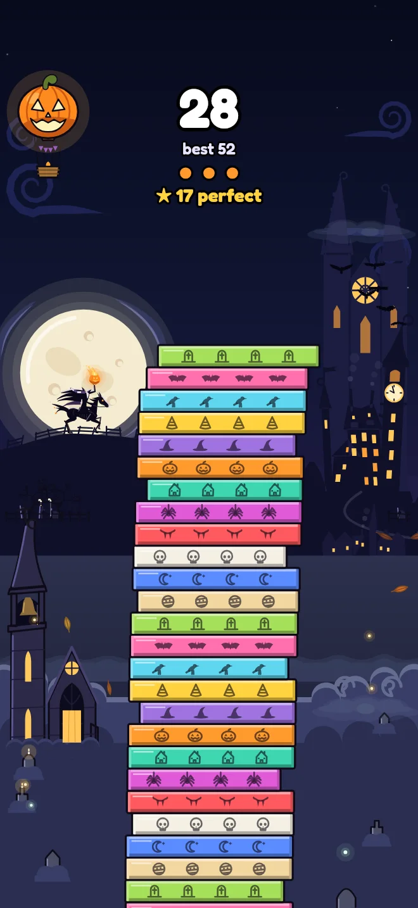
Washington Irving's The Legend of Sleepy Hollow, on a crooked small-town Main Street.
Song: The waltz with spooky effects layered on top, in the spirit of The Haunted Fun House.
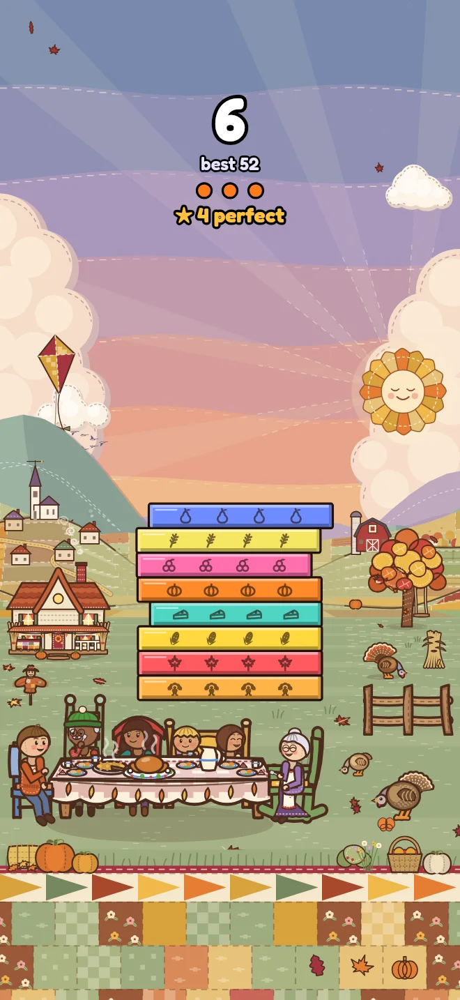
A cozy autumn hollow and a harvest supper on the lawn.
Song: A jazz waltz in the spirit of A Charlie Brown Thanksgiving and Nat King Cole's "Autumn Leaves" records; the melody is our own.
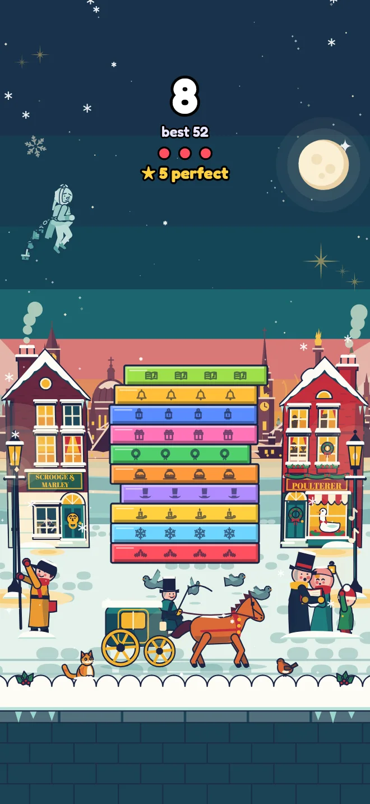
Charles Dickens's A Christmas Carol, drawn like a 1950s Christmas card.
Song: A symphonic-pops carol medley in the spirit of Leroy Anderson's A Christmas Festival, built on our theme and public-domain carols.
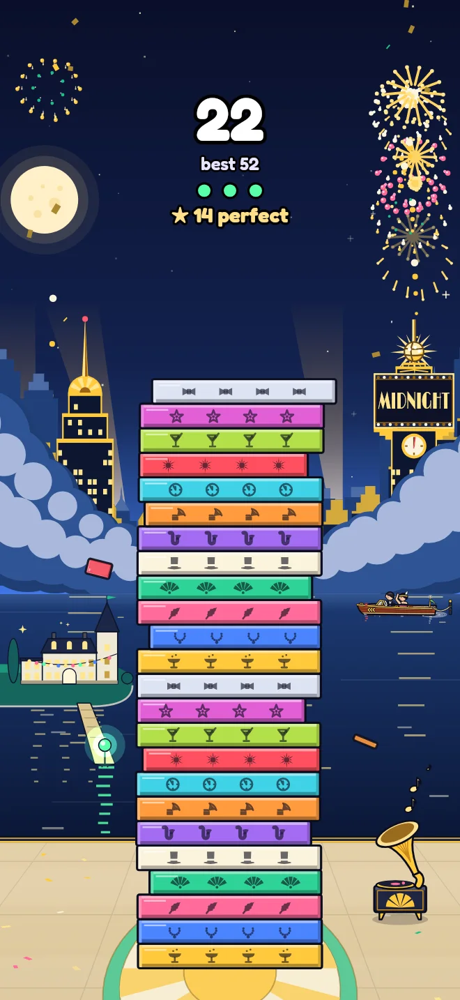
F. Scott Fitzgerald's The Great Gatsby: a 1920s Manhattan party with Art Deco towers.
Song: A 1920s foxtrot and Charleston on our own melody, in the spirit of the Jeeves and Wooster theme.
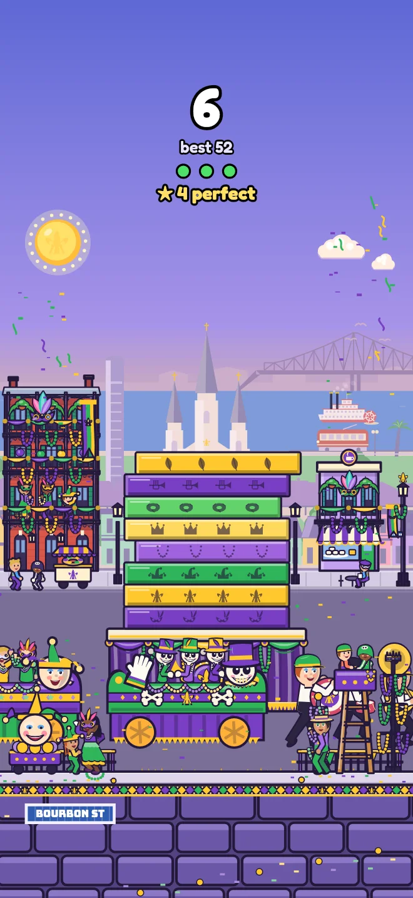
New Orleans' French Quarter and its papier-mâché parade floats.
Song: A New Orleans second-line brass band.
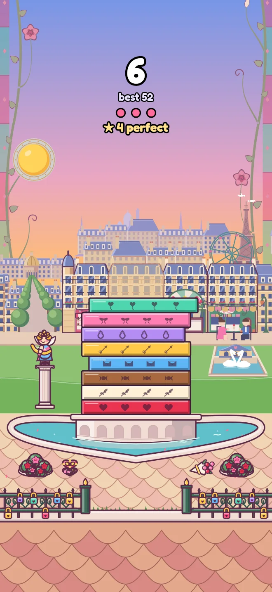
Belle Époque Paris and Art Nouveau posters.
Song: A Parisian valse musette, with a slow-dance verse for tenor sax.
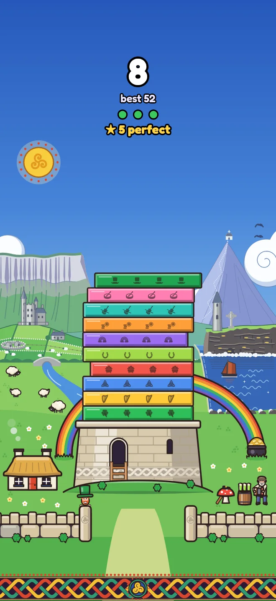
Irish folk tales and the Book of Kells: the west of Ireland in spring.
Song: A pub-session set of Irish jigs.
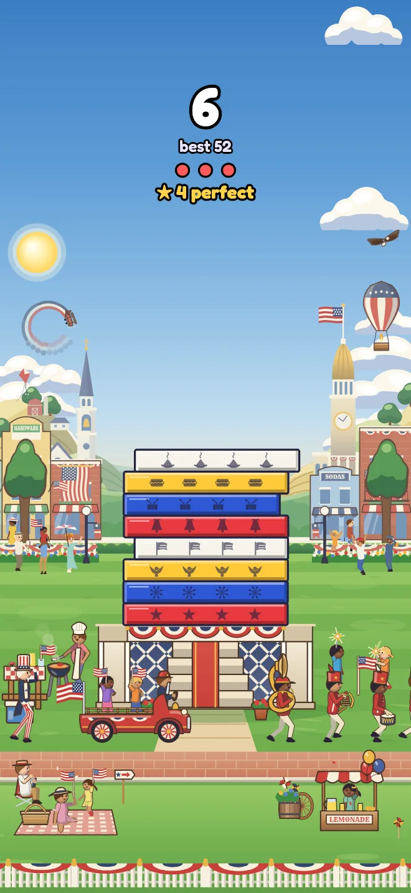
Vintage American postcards of a small-town Fourth of July.
Song: A Sousa-style quickstep in six-eight.
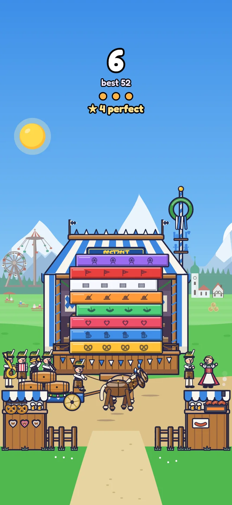
Bavaria's autumn folk festival, in a meadow under the Alps.
Song: Bavarian Blasmusik, the oom-pah brass of a festival tent.
Free, with no ads, no tracking, no in-app purchases and no account. It plays offline.
Facts and art for coverage of Sway Tower.
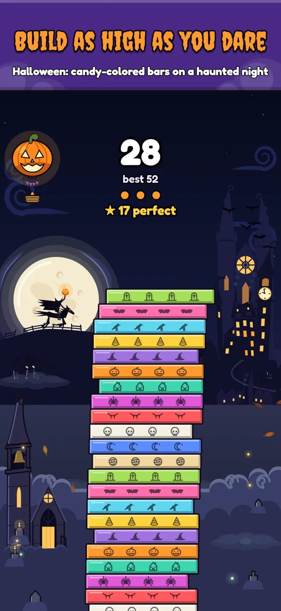
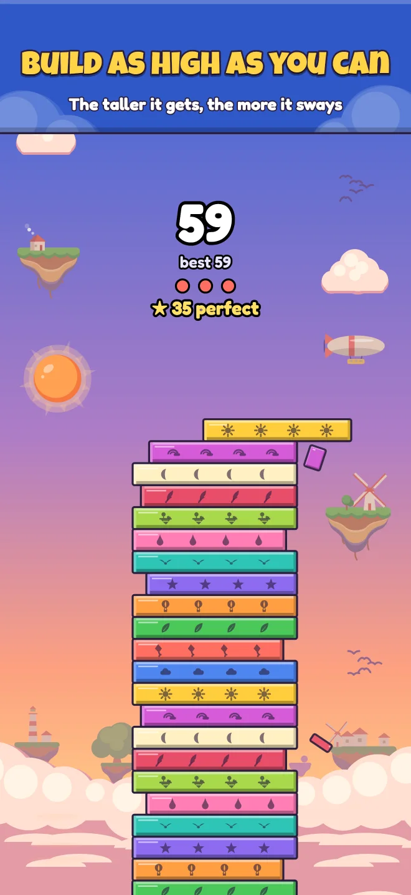
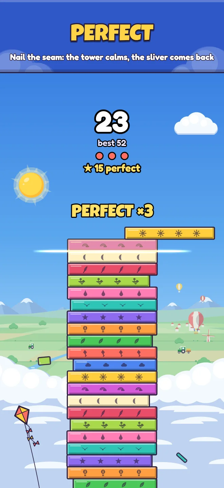
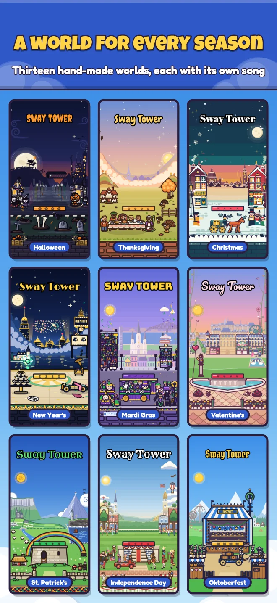
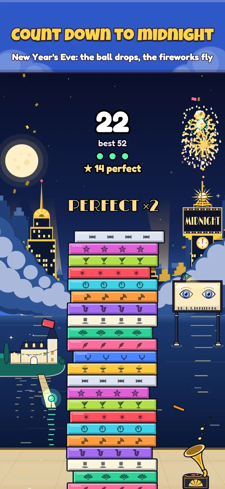
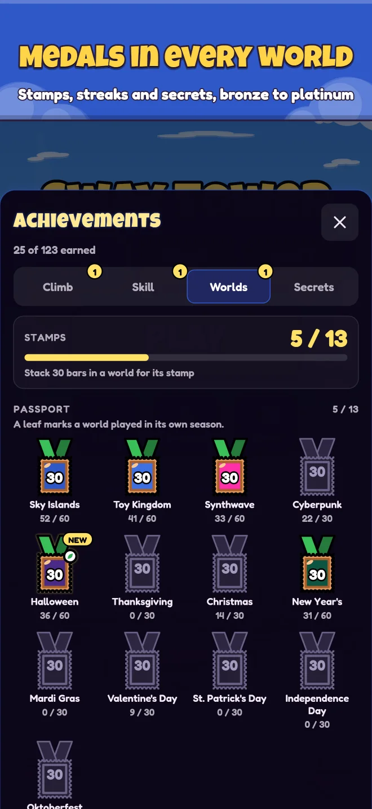
Press, reviewers and creators are welcome to use the wordmark (PNG, transparent), the trailer and the pictures on this page in coverage of Sway Tower. Please don't alter the logo. For the full kit (the 1024 px icon, the ten App Store screenshots at full size, every world in play, the trailer at 886 × 1920), a review copy of the game, or any world's art, write to the address above.
Questions, bugs or ideas? Write to swaytower.support@gmail.com and say which device and world you were on.
In Slide, the bar lands right where you tap; in Drop, it glides one bar higher and falls when you tap, so aim for where the swaying top will be when it lands. Pick either on the title screen; everything else plays the same, and each mode keeps its own best.
Open Settings (the Skins button on the title screen, or the Settings button at the top left during a run) and switch Music, Effects or Haptics under Sound (Haptics appears on devices with a Taptic Engine). The Sound button on the title screen turns the music and the effects off or on together.
Tap Skins on the title screen to see all 13. Auto, the default, brings out each holiday world around its holiday and Sky Islands (listed as Classic) the rest of the year; pick any world to stay there.
On your device, in the app's own storage, which your device's backup (iCloud or a computer) includes. They stay on that device, and deleting the app deletes them.
No. Every world and every song ships inside the app, so it plays in Airplane Mode.
In short: Sway Tower collects no data. The developer does not collect, receive, store, sell or share any personal information from the app.
Nothing. The app has no account or sign-in of its own, no analytics, no advertising, no tracking, no crash reporting and no server. It makes no network connections of its own and works offline. It contains no third-party code that collects data (it is built with Capacitor, an open-source app framework that runs inside the app and sends nothing anywhere), and it shares nothing with anyone.
The only ways out of the app are links you tap yourself: Support and Privacy in Settings open this website in Safari, and Rate Sway Tower shows Apple's rating prompt or opens the App Store.
To work, the app saves a few things in its own storage on your device: your best score in each mode, the medals you've earned (with when and in which mode), the mode and world you picked, your settings (music, sound effects, haptics, motion), and a few reminders of its own, such as whether it has already asked you for a rating. None of it leaves your device or reaches the developer. It is included in your device's backups as your iOS settings decide, and deleting the app deletes it.
The Share button on the game-over card draws a picture of your tower and score on your device and hands it to the iOS share sheet, which sends it only where you choose. If you choose Save Image, iOS asks once for permission to add to your photo library. That permission is add-only: the app can save the picture but cannot see, read or change your photos. You can withdraw it at any time in Settings › Privacy & Security › Photos › Sway Tower.
Now and then the app may show Apple's standard prompt to rate it. Apple runs that prompt; the developer sees only the public ratings and reviews on the App Store.
Sway Tower is rated 12+ (13+ on iOS 26 and later) and is not directed at children. It collects no personal information from anyone, including children under 13.
This page is a set of static files hosted on GitHub Pages. It sets no cookies, has no analytics or advertising, and loads nothing from any other site (its fonts are served with it). GitHub, as the host, may log technical information such as visitors' IP addresses to run and secure its service; see GitHub's Privacy Statement.
The developer holds no information about you, so there is nothing to request, correct or delete. What the app saves stays on your device until you delete the app (or remove it from your backups). If you email the developer, your address and message are used only to reply to you, kept only as long as that takes, and deleted sooner if you ask.
If this policy changes, the new version will be posted here with a new effective date.
Questions about privacy: swaytower.support@gmail.com.